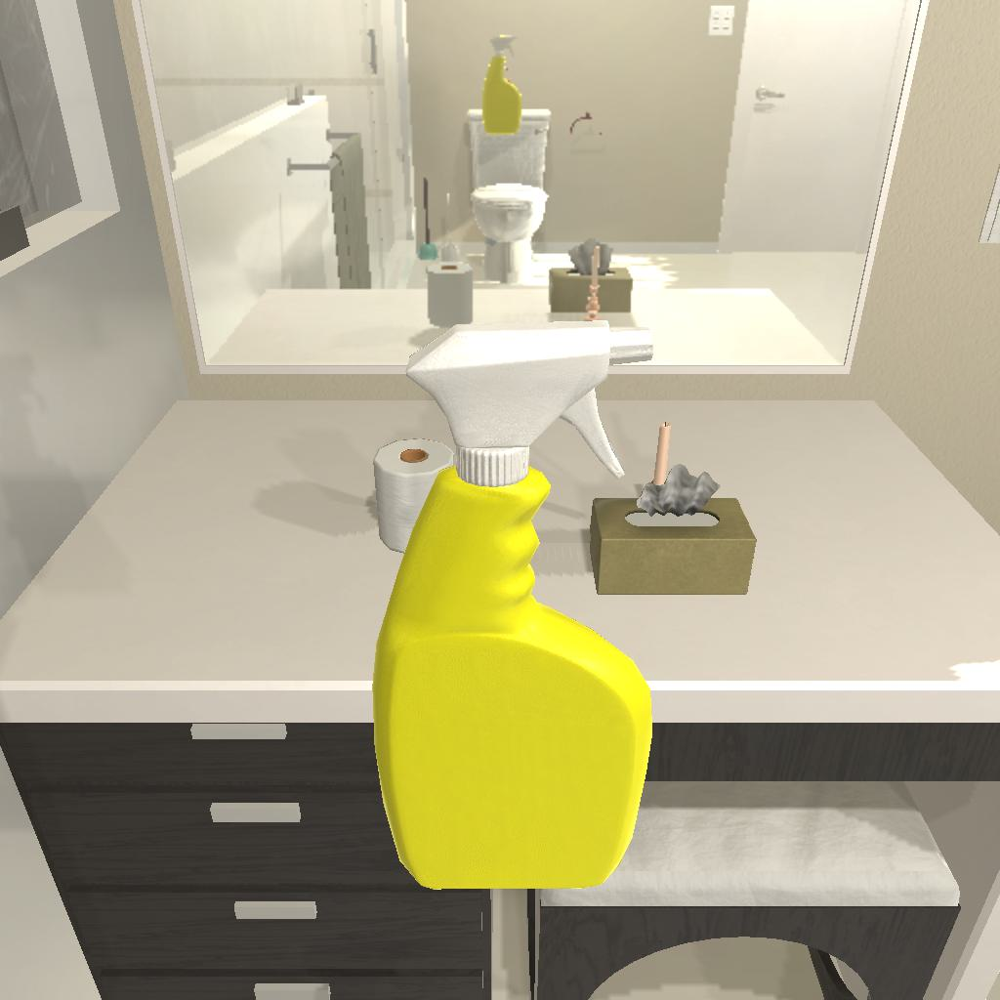

---------------------------------------------------------task: 28---------------------------------------------------------
--------------------------------------------------------------------------------------------------------------------------------------------------------------------
--------------------------------------------------------------------------------------------------------------------------------------------------------------------
Step:--------------------------------------------------------------------------9-------------------------------------------------------------------------------
----------------------------------------
VLM Prompt:
Image1:
Image2:
**Instruction**
1. Analyze the provided images to identify all visible household objects and compare the difference between images (e.h. whether the object is opened or not and taken on hand or not), focusing on those relevant to the task description "put two spraybottle in toilet."
2. Use the analysis of images and the task hint "The agent must find an object of the desired type, pick it up, find the correct location to place it, put it down there, then look for another object of the desired type, pick it up, return to previous location, and put it down there with the other object." to answer the question: what is the most reasonable action in the choices for the task description "put two spraybottle in toilet"?
3. Decide and write the answer using the template: The answer is: (i): , where i is the real number. If there is no desired object in images, search every place based on **Initial Observation** to find the object. And if no one is exactly correct, choose a similar answer.
**Initial Observation**
You are in the middle of a room. Looking quickly around you, you can see bathtub (1), bathtubbasin (1), cart (1), sink (1), garbagecan (1), sinkbasin (1), countertop (1), drawer (1-4), toilet (1), toiletpaperhanger (1)
**Answer Choices**
(1): go to bathtub 1
(2): go to bathtubbasin 1
(3): go to sink 1
(4): go to garbagecan 1
(5): go to sinkbasin 1
(6): go to drawer 1
(7): go to drawer 2
(8): go to drawer 3
(9): go to drawer 4
(10): go to toilet 1
(11): go to toiletpaperhanger 1
(12): put spraybottle 1 in/on countertop 1
(13): examine spraybottle 1
(14): examine countertop 1
**Answer**
Let's think step by step by following the instructions.
----------------------------------------
----------------------------------------
Original Response:
First, we analyze the images provided. In both images, we see a yellow spray bottle on the countertop. There are no significant differences between the two images; the spray bottle appears to be in the same position and state (not opened and not held) in both images.
Next, we follow the task description, "put two spray bottles in the toilet." The agent must find an object of the desired type, which in this case is a spray bottle. Since we already see one spray bottle on the countertop, the agent does not need to search for it. The agent must pick it up and find the correct location to place it, which is the toilet.
From the initial observation, we know there is a toilet in the room, and the agent is currently in the middle of the room with visibility to various objects, including the toilet.
Based on the above analysis, the most reasonable action for the task is to go to the toilet and then put the spray bottle there. However, the provided answer choices do not include "pick up spraybottle 1" or "put spraybottle 1 in/on toilet 1," which would be the exact actions needed. The closest action from the choices available that progresses towards completing the task is to go to the toilet, so the agent can then put the spray bottle there.
The answer is: (10): go to toilet 1.
----------------------------------------
----------------------------------------
>>> Refine Original VLM Response and Get Pure Action: go to toilet 1
----------------------------------------
-----------------------------------------------------------------
Running time: 17.10065460205078 seconds
Total Money: 14.618720000000003
-----------------------------------------------------------------
-----------------------------------------------------------------
Text Observation:You arrive at loc 11. On the toilet 1, you see a showerdoor 1, and a soapbottle 2.
-----------------------------------------------------------------
UNSUCCEED